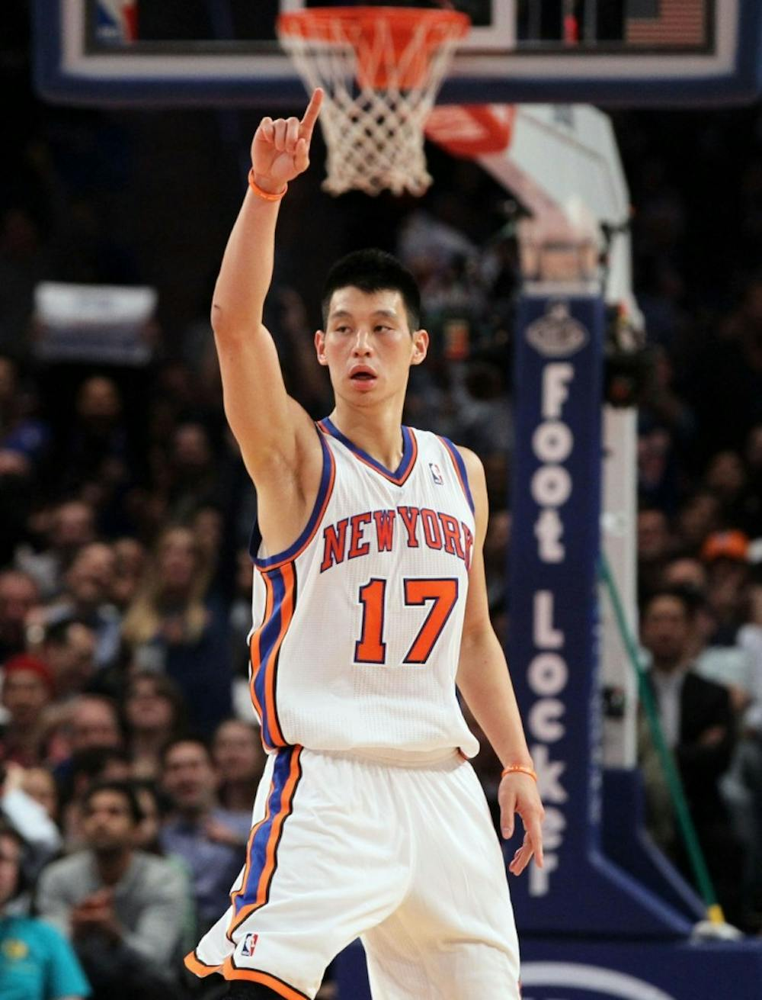
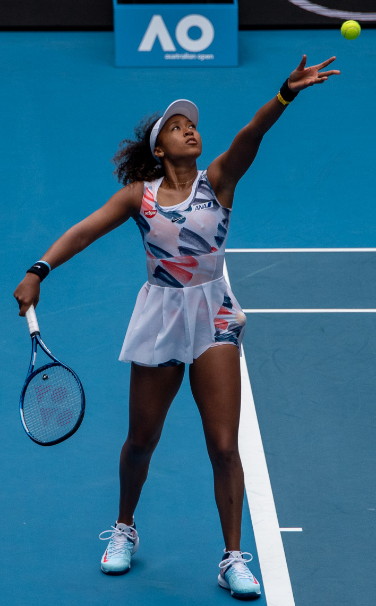

Welcome to the ultimate platform celebrating the Asian American Athletic Renaissance. This website is dedicated to spotlighting the grit, talent, and monumental achievements of Asian American athletes who are fundamentally transforming the landscape of global sports. We go beyond the headlines to tell the stories of champions, record-breakers, and pioneers—individuals who have not only excelled in their chosen disciplines but have also shattered outdated stereotypes and defied limiting expectations. Our mission is to ensure that these inspiring accomplishments are not just recognized, but celebrated as cornerstones of athletic history.
This digital space serves as an electrifying archive and a powerful source of inspiration for fans and aspiring athletes around the world. By focusing on major accomplishments and the journeys of overcoming adversity, we aim to demonstrate the sheer force and diverse excellence of the Asian American community in every sport, on every continent. We are here to amplify their voices, honor their victories, and shine a brilliant light on the legacy they are building—a legacy defined by resilience, dedication, and the undeniable truth that Asian Americans belong at the pinnacle of athletic achievement.